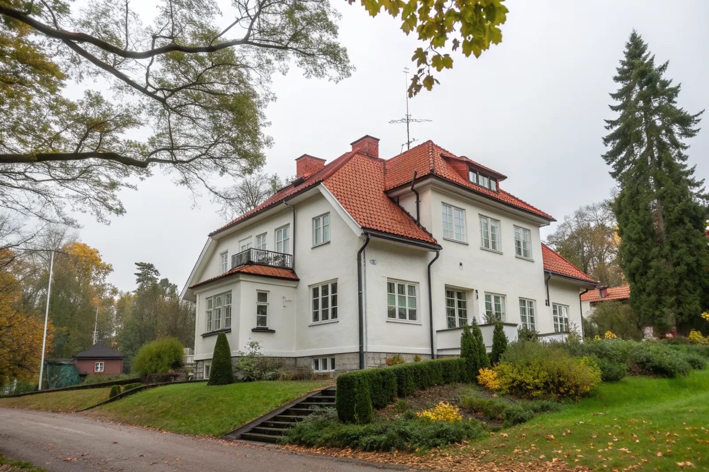

Takbyte i Bromma
Byte av tegel-, betong- och plåttak.
Takbyte i Bromma →Bromma i västerort är vårt hemmaområde – vi utgår härifrån (Mariehäll) och känner västerorts villor väl. Vi är takläggare i Bromma för villor i bland annat Ängby, Nockeby, Äppelviken och Bromma Kyrka.
Bromma i västra Stockholm är vårt hemmaområde – vi utgår från Mariehäll och känner västerorts villor in i minsta detalj. I klassiska trädgårdsstäder som Ängby, Äppelviken, Nockeby och Smedslätten är många hus från 1920–40-talet, ofta med branta tegeltak och karaktärsfulla takdetaljer som vi är vana att bevara.
Äppelviken och Ålsten har en enhetlig villakaraktär där husens uttryck värnas; vid takbyte här är det avgörande att välja pannor och plåtkulörer som passar områdets stil. I nyare delar och radhusområden förekommer också låglutande tak och plåtlösningar.
Som lokal takfirma med bas mitt i Bromma har vi mycket korta avstånd till jobben, vilket gör etablering, ställning och uppföljning enkla. Vi känner de lokala förutsättningarna – från stora lövträd som fyller hängrännor till snölaster på norrsidor.
Oavsett om du behöver ett komplett takbyte eller en riktad renovering ger vi en tydlig bedömning och offert. Vi arbetar även i grannområden – se alla områden vi arbetar i.

Bromma har några av Stockholms mest välbevarade villaområden. I trädgårdsstäderna Ängby, Äppelviken, Ålsten och Smedslätten är många hus från 1920–40-talet, ofta med branta tak i lertegel eller med falsad plåt. Funkisvillorna från 1930-talet i bland annat Ålsten och Nockeby har låga, ibland nästan platta tak med papp eller plåt, som kräver noggrant tätskikt och bra avvattning.
De stora, gamla trädgårdarna är Brommas charm men också en utmaning för taken: löv och barr sätter igen hängrännor, och skuggiga takfall får mossa som håller kvar fukt. Vi ser ofta att läckage börjar vid ränndalar och skorstenar där löv har samlats.
Flera områden i Bromma har detaljplaner med varsamhetsbestämmelser. Ett takbyte till samma material och kulör kräver normalt inget bygglov, men vid byte av material, kulör eller takform kan bygglov behövas. Stäm av med stadsbyggnadskontoret i Stockholm – vi hjälper dig med underlag och materialval som passar området.
Eftersom vi utgår från Mariehäll i Bromma kan vi göra besiktning med kort varsel och följa projektet på plats varje dag. Det gör det enkelt att stämma av detaljer under arbetets gång.
Byte av tegel-, betong- och plåttak.
Takbyte i Bromma →Riktade åtgärder som förlänger takets liv.
Takrenovering i Bromma →Bedömning av skick inför beslut.
Takbesiktning i Bromma →Nytt ytskydd på plåttak.
Takmålning i Bromma →Skonsam tvätt och mossbehandling.
Taktvätt i Bromma →Nytt plåttak och plåtarbeten.
Plåttak i Bromma →Vi utgår från Bromma (Mariehäll), precis intill Sundbyberg, och når Bromma snabbt. Det gör att vi kan komma ut på besiktning utan långa väntetider och hålla nära kontakt genom hela projektet.
Läs mer om tak på villa eller jämför takbyte och takrenovering innan du bestämmer dig.
Vi arbetar även i Sundbyberg.
Takläggare i Sundbyberg →Vi arbetar även i Spånga.
Takläggare i Spånga →Vi arbetar även i Solna.
Takläggare i Solna →Vi arbetar även i Järfälla.
Takläggare i Järfälla →Vi arbetar även i Vällingby.
Takläggare i Vällingby →Vi arbetar även i Ekerö.
Takläggare i Ekerö →